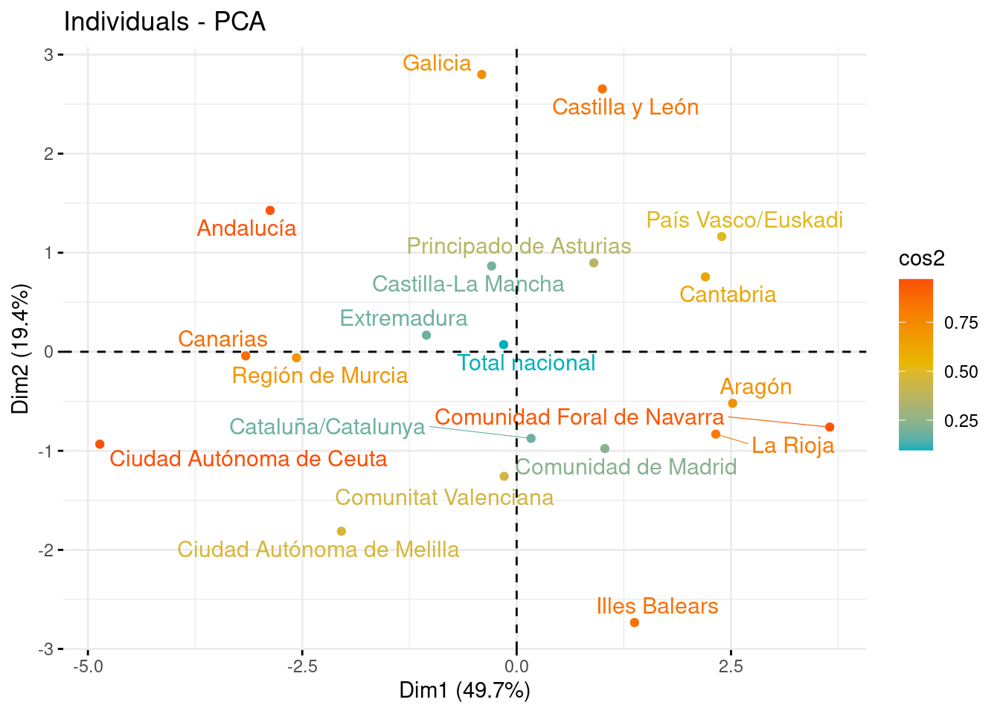

# Librerías
library(readxl) # Para leer los excels
library(dplyr) # Para tratamiento de dataframes
library(ggplot2) # Nice plots
library(factoextra) # fviz_cluster function
library(ggcorrplot) # Para función ggcorrplot
library(corrplot) # Para corrplotReducción Dimensionalidad - PCA: IMCV_pca
Introducción
A continuación se expondrá como llevar a cabo una Reducción de Dimensionalidad utilizando el método de Componentes Principales. Para ello se utilizará un dataset sobre el que se irán explicando los sucesivos pasos a llevar a cabo.
dataset
En este cuaderno vamos a analizar el dataset llamado IMCV_pca.xlsx.
En el siguiente dataset disponemos de datos por Comunidades Autónomas de las nueve dimensiones relativas a la calidad de vida que componen el Índice Multidimensional de Calidad de Vida (IMCV), una estadística con carácter experimental. Datos correspondientes al año 2020.
Concretamente tenemos las siguientes variables:
- indice_total: Índice multidimensional de calidad de vida teniendo en cuenta las nueve dimensiones.
- dim1 : Indicador sobre las condiciones materiales de vida.
- dim2 : Indicador sobre el trabajo.
- dim3 : Indicador sobre la salud.
- dim4 : Indicador sobre la educación.
- dim5 : Indicador sobre el ocio y relaciones sociales.
- dim6 : Indicador sobre la seguridad física y personal.
- dim7 : Indicador sobre la gobernanza y los derechos básicos.
- dim8 : Indicador sobre el entorno y el medio ambiente.
- dim9 : Indicador sobre experiencia general de la vida.
- CCAA: Comunidades Autónomas.
La estadística experimental sobre el Índice Multidimensional de Calidad de Vida (IMCV) se construye a partir de los indicadores de calidad del INE, que ofrecen una visión panorámica (multidimensional) de la calidad de vida en España, mediante la elección de un conjunto amplio pero limitado de indicadores (actualmente 60) que cubren nueve dimensiones usadas para describir la calidad de vida.
Nuestro objetivo es aplicar un procedimiento de PCA para hacer toda esta información más manejable es a través de un análisis de componentes principales, el cual nos permite reducir el número de variables correlacionadas entre sí a otro número igual de componentes no correlacionados.
Esta técnica de análisis tiene muchas aplicaciones y en esta ocasión la utilizaremos para poder simplificar la tarea de clasificación territorios españoles en base a sus características de calidad vida. El objetivo es reducir el número de variables con las que trabajar sufriendo la menor pérdida posible de información. La agrupación de comunidades autónomas en grupos que compartan unas características similares la realizaremos mediante una técnica de análisis de conglomerados denominada K-medias. El objetivo es agrupar nuestras 17 comunidades y dos ciudades autónomas en un puñado de grupos homogéneos.
Descripción del trabajo a realizar
Realizar una Reducción de la Dimensionalidad empleando el procedimiento de Componentes Principales. El objetivo es reducir el número de variables de los 9 indicadores globales de calidad de vida sin perder mucha información.
- Hacer un análisis exploratorio explorando matriz de correlaciones.
- Ver si es necesario escalar/centrar los datos antes de aplicar pca y decidir si hacerlo con matriz de correlaciones o covarianzas.
- Seleccionar un determinado número de componentes y ver como influyen las variables en estas.
- Interpretar componentes y resultados.
Análisis Exploratorio (EDA)
EDA viene del Inglés Exploratory Data Analysis y son los pasos relativos en los que se exploran las variables para tener una idea de que forma toma el dataset.
Cargar Librerías
Lo primero de todo vamos a cargar las librerías necesarias para ejecutar el resto del código del trabajo:
Lectura datos
Ahora cargamos los datos del excel correspondientes a la pestaña “Datos” y vemos si hay algún NA o algún valor igual a 0 en nuestro dataset. Vemos que no han ningún NA (missing value) en el dataset luego no será necesario realizar ninguna técnica para imputar los missing values o borrar observaciones.
datos <- read_excel("../../../../files/IMCV_pca.xlsx", sheet = "Datos")En primer lugar, cargamos los datos que vamos a utilizar. En este caso, se trata de un conjunto de datos compuesto por 20 filas y 14 columnas. Las filas corresponden a las 19 Comunidades Autónomas de España (17 CCAA, Ceuta y Melilla) y el Total Nacional y las 11 columnas al nombre de dichas CCAA, los 9 indices y el indice total (la media de los anteriores).
Antes de comenzar a aplicar la técnica, comprobamos si hay valores perdidos, por si fuera necesario realizar algún preproceso. En este caso, y como vemos a continuación, no hay ningún NA en los datos que vamos a utilizar.
sum(is.na(datos))[1] 0Por otra parte, para tener una noción general que nos permita describir el conjunto con el que vamos a trabajar, podemos extraer su dimensión, el tipo de variables que contiene o qué valores toma cada una.
# Dimensión del conjunto de datos
dim(datos)[1] 20 11# Tipo de variables que contiene
str(datos)tibble [20 × 11] (S3: tbl_df/tbl/data.frame)
$ CCAA : chr [1:20] "Total nacional" "Andalucía" "Aragón" "Principado de Asturias" ...
$ dim1 : num [1:20] 100.1 97.1 105.2 102.2 101.8 ...
$ dim2 : num [1:20] 100.2 95.4 103.3 99.7 102.6 ...
$ dim3 : num [1:20] 101.3 99.2 102.1 99.7 102.5 ...
$ dim4 : num [1:20] 106 101 107 109 103 ...
$ dim5 : num [1:20] 99.1 96.5 104.9 98 103.9 ...
$ dim6 : num [1:20] 102 102 106 109 103 ...
$ dim7 : num [1:20] 100 94.9 97.4 100.2 109.4 ...
$ dim8 : num [1:20] 102.1 98.9 106.3 105.9 104.1 ...
$ dim9 : num [1:20] 104 102 111 105 112 ...
$ indice_total: num [1:20] 101.7 98.5 104.8 103.2 104.7 ...# Descripción de las variables
summary(datos) CCAA dim1 dim2 dim3
Length:20 Min. : 91.12 Min. : 94.6 Min. : 98.20
Class :character 1st Qu.: 97.49 1st Qu.: 97.6 1st Qu.: 99.74
Mode :character Median :100.79 Median :100.2 Median :101.03
Mean :100.16 Mean : 99.8 Mean :101.20
3rd Qu.:103.41 3rd Qu.:102.5 3rd Qu.:102.39
Max. :105.31 Max. :103.4 Max. :104.65
dim4 dim5 dim6 dim7
Min. : 97.35 Min. : 95.45 Min. : 93.32 Min. : 91.22
1st Qu.:103.09 1st Qu.: 97.56 1st Qu.:100.15 1st Qu.: 97.03
Median :106.18 Median : 99.77 Median :102.76 Median :100.12
Mean :105.95 Mean :100.38 Mean :102.94 Mean : 99.97
3rd Qu.:108.14 3rd Qu.:102.53 3rd Qu.:106.55 3rd Qu.:102.49
Max. :115.15 Max. :107.28 Max. :109.48 Max. :109.35
dim8 dim9 indice_total
Min. : 93.17 Min. : 93.81 Min. : 97.37
1st Qu.: 99.04 1st Qu.:103.09 1st Qu.:100.35
Median :103.31 Median :106.50 Median :101.95
Mean :102.51 Mean :105.26 Mean :102.02
3rd Qu.:105.97 3rd Qu.:107.67 3rd Qu.:103.48
Max. :109.42 Max. :112.49 Max. :105.92 Vemos que estas variables (a excepción de las CCAA) son todas de tipo numérico, y además, podemos obtener información como la media, desviación típica, los cuartiles y el histograma de cada una.
Correlación: El que existan correlaciones muy elevadas en el conjunto de datos nos permitirá resumir la información en un menor número de componentes principales, pues éstas explicarán una mayor cantidad de información.
ggcorrplot(cor(datos[, 2:11]), type = "lower", lab = T, show.legend = T)En este caso, se ha generado un gráfico entre variables, sin tener en cuenta la correlación de la variable consigo misma, pues siempre será del 100%, o 1 en tanto por uno.
En términos absolutos, vemos lo siguiente:
Hay varias correlaciones moderadas/altas. En general la variable indice_total esta muy correlacionada con todas las demás. Esto parece razonable puesto que sabemos que es la media aritmética de las otras nueve dimensiones. Es por ello que no aporta nada de información extra. Además destaca la correlación entre dim1 (materiales), dim2 (trabajo), dim3(salud) y dim4 (educación) entre todas ellas. Esto también podría parecer razonable puesto que una mejor educación suele llevar más satisfacción en los estudios, en el trabajo y en las condiciones materiales (puesto que se suele ganar más dinero) y esto puede derivar en menos problemas de salud debido a una vida “más tranquila. También hay correlaciones altas entre dim1 y dim8, y entre dim7 y dim8.
Hay correlaciones muy bajas entre dim8 (entorno y el medioambiente) y dim9 (satisfacción general).
En resumen, vemos que hay varias variables con una alta correlación absoluta (tanto positiva como negativa), luego esto nos va a permitir resumir la información en un número de componentes principales menor al número de variables que tenemos.
Reducción Dimensionalidad: Componentes Principales
Introducción
El Análisis de Componentes Principales (PCA) es una técnica para reducir la complejidad de conjuntos de datos con múltiples variables. Su objetivo es transformar variables correlacionadas en un conjunto menor de dimensiones sin perder la mayor parte de la información original.
Se busca encontrar nuevas variables (componentes) que estén incorrelacionadas y que capturen la máxima variabilidad de los datos. Esto se logra mediante combinaciones lineales de las variables originales. PCA es útil para entender relaciones, reducir dimensiones y manejar la alta correlación entre variables.
Para aplicar PCA, se necesitan datos cuantitativos y es crucial escalar las variables (estandarizar = media cero y varianza uno). Esto garantiza que ninguna variable domine el análisis. Además, se puede trabajar con la matriz de correlaciones para abordar fuertes correlaciones entre variables, manteniendo así la información más relevante del conjunto de datos.
Los pasos generales son:
Estandarización de las variables: Es importante estandarizar las variables numéricas para que tengan media cero y desviación estándar uno. Esto es crucial para que ninguna variable domine el análisis debido a su escala.
Cálculo de la matriz de correlaciones o covarianzas: Dependiendo del enfoque, se puede trabajar con la matriz de correlaciones si se busca abordar fuertes correlaciones entre variables, o con la matriz de covarianzas si se busca la varianza total de las variables.
- NOTA: Aconsejable trabajar siempre con la matriz de correlaciones (a no ser que todas variables estén en las mismas unidades, que se podrá usar la matriz de covarianzas). De no seguir esta nota y usar la matriz de covarianzas, las variables que tienen mayores unidades dominarán la estructura de covarianza, lo que llevará a una representación inexacta de la variabilidad real de los datos.
Descomposición de la matriz: Se descompone la matriz de correlaciones en sus vectores y valores propios. Los valores propios representan la cantidad de varianza explicada por cada componente principal, mientras que los vectores propios (autovectores) determinan la dirección de cada componente en el espacio multidimensional original.
Selección de componentes: Los componentes se ordenan de manera descendente según la cantidad de varianza que explican. Los primeros componentes capturan la mayor variabilidad de los datos y se seleccionan para reducir la dimensionalidad manteniendo la información más relevante.
Transformación de datos: Proyectar los datos originales en el espacio de los componentes principales para obtener las nuevas variables. Estas son combinaciones lineales de las variables originales y son ortogonales entre sí. Esta transformación lineal conserva la mayor parte de la información en un espacio de menor dimensión, lo que facilita el análisis y la visualización de los datos.
Interpretación y visualización: Explorar la importancia de cada componente en términos de la variabilidad explicada. Se pueden interpretar los componentes para comprender qué aspectos de los datos capturan. Si es posible, representar gráficamente los datos en el espacio reducido de los componentes principales para obtener una mejor comprensión de las relaciones entre las observaciones.
Modelo
En las siguientes lineas haremos que la variable CCAA se ponga como nombre de filas y posteriormente eliminaremos esa variable ya que ya la tendremos como nombre de filas.
CCAA <- datos$CCAA
datos <- datos[, -1] # Eliminamos ahora
rownames(datos) <- CCAA # Como nombres de filas las CCAAEscalamos los datos y calculamos la matriz de varianzas covarianzas, mostramos solo la diagonal (debería ser 1).
datos2 <- scale(datos)
summary(datos2) dim1 dim2 dim3 dim4
Min. :-2.1326 Min. :-1.7625 Min. :-1.56842 Min. :-1.9141
1st Qu.:-0.6318 1st Qu.:-0.7483 1st Qu.:-0.76011 1st Qu.:-0.6366
Median : 0.1484 Median : 0.1242 Median :-0.08763 Median : 0.0510
Mean : 0.0000 Mean : 0.0000 Mean : 0.00000 Mean : 0.0000
3rd Qu.: 0.7658 3rd Qu.: 0.9280 3rd Qu.: 0.62421 3rd Qu.: 0.4868
Max. : 1.2135 Max. : 1.2268 Max. : 1.80469 Max. : 2.0459
dim5 dim6 dim7 dim8
Min. :-1.4419 Min. :-2.18929 Min. :-1.78315 Min. :-1.9962
1st Qu.:-0.8263 1st Qu.:-0.63634 1st Qu.:-0.59890 1st Qu.:-0.7407
Median :-0.1781 Median :-0.04166 Median : 0.03022 Median : 0.1713
Mean : 0.0000 Mean : 0.00000 Mean : 0.00000 Mean : 0.0000
3rd Qu.: 0.6283 3rd Qu.: 0.81996 3rd Qu.: 0.51421 3rd Qu.: 0.7402
Max. : 2.0179 Max. : 1.48572 Max. : 1.91434 Max. : 1.4768
dim9 indice_total
Min. :-2.6466 Min. :-2.01845
1st Qu.:-0.5007 1st Qu.:-0.72184
Median : 0.2878 Median :-0.02952
Mean : 0.0000 Mean : 0.00000
3rd Qu.: 0.5582 3rd Qu.: 0.63501
Max. : 1.6719 Max. : 1.69368 diag(var(datos2)) dim1 dim2 dim3 dim4 dim5 dim6
1 1 1 1 1 1
dim7 dim8 dim9 indice_total
1 1 1 1 Aplicamos funcion PCA, notar que en este caso no haría falta los argumentos SCALE=TRUE y CENTER=TRUE puesto que ya hemos escalado dos datos en un paso previo. Por defecto en la función viene el valor de SCALE=FALSE y CENTER=TRUE.
pca <- prcomp(datos2, center = TRUE, scale = TRUE) # Scale=TCalculamos los coeficientes de la ecuación para cada componente principal
pca$rotation PC1 PC2 PC3 PC4 PC5
dim1 0.41217280 0.14877833 -0.007886089 0.25040422 -0.03495987
dim2 0.39138679 -0.09690754 -0.285268440 0.02374485 0.30937355
dim3 0.31866055 -0.26428112 -0.366226773 -0.25600015 -0.27286698
dim4 0.34816197 0.10046074 -0.432653154 -0.04246203 0.09300467
dim5 0.21612679 -0.13421375 0.369533348 -0.74071758 0.37307852
dim6 0.26627260 0.31778339 0.561890598 0.13651894 0.10130691
dim7 -0.01055075 -0.57258219 0.099090101 0.50180042 0.49810262
dim8 0.39164780 0.13691741 0.227414824 0.20210276 -0.40340929
dim9 0.02291434 -0.62614481 0.253810202 -0.05251280 -0.50833075
indice_total 0.42723809 -0.17573666 0.137902202 0.08178066 0.03554529
PC6 PC7 PC8 PC9 PC10
dim1 0.15986625 -0.35400851 0.14448659 -7.355855e-01 0.1764945
dim2 0.02687191 -0.56236950 -0.38092875 4.272942e-01 0.1228933
dim3 0.45622979 0.46654349 -0.32990432 -1.162118e-01 0.0796614
dim4 -0.68323743 0.32389336 0.25348956 -8.518163e-03 0.1870813
dim5 0.07972391 -0.03791973 0.28252371 -5.465610e-02 0.1423732
dim6 -0.17814501 0.31489323 -0.56481902 -8.173809e-03 0.1830583
dim7 0.13181815 0.27778546 0.16153493 3.579959e-05 0.2041452
dim8 0.24817365 0.04247789 0.46564230 5.043772e-01 0.1948073
dim9 -0.41586550 -0.23231717 -0.13180172 -7.148902e-02 0.1801180
indice_total -0.09359397 0.04809077 0.04236672 -1.395427e-02 -0.8640333Podemos observar aquí nuestras variables en el nuevo sistema de cordenadas (las componentes principales), dando lugar a ecuaciones de cada eje como combinación lineal del total de variables. Analizar el vector que crea cada componente y cuáles son los pesos que tienen las variables en cada componente, ayuda a interpretar qué tipo de información recoge cada una de ellas.
Por ejemplo, la primera componente principal (PC1), presenta la siguiente ecuación, como combinación lineal de las 10 variables originales (los 9 indices y el total):
\(PC_1 = 0.41 {dim1} + 0.39 {dim2} + 0.31dim3 + 0.34 dim4 + 0.21 dim5 + 0.26 dim6 -0.01 dim7 +0.39dim8 +0.02dim9 +0.42indice_total\)
Extraemos las nuevas coordenadas de los individuos (puntuaciones)
Además, podemos ver las puntuaciones, que son las coordenadas de cada observación original (Comunidad Autónoma) sobre los nuevos ejes construidos (componentes principales). Esto corresponde a un cambio de coordenadas bajo el paradigma del Álgebra Lineal.
pca$x PC1 PC2 PC3 PC4
Total nacional -0.1520461 0.07182026 -0.45989066 0.1972086
Andalucía -2.8750017 1.42744067 0.03518304 0.1280892
Aragón 2.5189323 -0.52042496 0.93792815 -0.7452448
Principado de Asturias 0.8999964 0.89724658 0.68192085 1.2083129
Illes Balears 1.3747946 -2.73400720 0.95711048 0.2369471
Canarias -3.1596066 -0.04090058 -0.09918370 0.3649717
Cantabria 2.2014164 0.75598285 1.42109419 -0.8263169
Castilla y León 0.9996922 2.65361220 0.52989434 -0.6582007
Castilla-La Mancha -0.2922882 0.86529256 0.53813056 1.2402982
Cataluña/Catalunya 0.1681743 -0.87429121 -1.52725547 0.8279649
Comunitat Valenciana -0.1458826 -1.25747939 0.61481441 0.9489872
Extremadura -1.0519197 0.16786627 1.68926034 -0.4259641
Galicia -0.4075932 2.79976605 -0.32800120 -0.6218279
Comunidad de Madrid 1.0281924 -0.97693037 -2.43036654 -0.1553581
Región de Murcia -2.5673690 -0.06088548 -0.25201844 1.3020744
Comunidad Foral de Navarra 3.6514886 -0.76057338 -0.38861291 0.2272912
País Vasco/Euskadi 2.3914014 1.16327326 -2.33194237 -0.6865915
La Rioja 2.3224637 -0.83141897 0.63878955 0.5481555
Ciudad Autónoma de Ceuta -4.8615062 -0.93309263 -0.28920898 -0.2972782
Ciudad Autónoma de Melilla -2.0433389 -1.81229652 0.06235434 -2.8135186
PC5 PC6 PC7 PC8
Total nacional -0.004590525 0.07740386 -0.03500474 -0.03286903
Andalucía -0.617579706 0.16919700 -0.06676935 -0.10573402
Aragón -0.377371489 -0.23123596 -0.92964071 -0.27460172
Principado de Asturias -0.090833979 -0.90107665 0.27340119 -0.05512076
Illes Balears 0.429253728 0.44404518 -0.41284040 -0.04953438
Canarias -0.620175044 -0.75909198 0.29915397 -0.54095905
Cantabria -0.005966101 -0.70417837 -0.05752270 0.23598297
Castilla y León 0.161603996 0.46660593 -0.60032019 0.30539596
Castilla-La Mancha -0.258461708 1.19428695 0.25999657 -0.08984701
Cataluña/Catalunya -0.229653846 0.13187983 -0.56300688 -0.25232420
Comunitat Valenciana 0.505122343 -0.53013775 0.04048603 0.36603262
Extremadura -1.078612886 0.47481509 0.77326877 0.23250910
Galicia 1.557454194 0.06616103 0.24900479 -0.33491570
Comunidad de Madrid 0.247821195 0.33060935 0.55630084 0.22530929
Región de Murcia 0.861302303 -0.37552323 -0.05444533 0.34920723
Comunidad Foral de Navarra -0.332575416 -0.13910414 0.70942125 0.02558768
País Vasco/Euskadi -0.851410145 -0.26279579 -0.25757341 0.15864443
La Rioja 0.483996053 0.46552566 0.05023515 -0.30388831
Ciudad Autónoma de Ceuta -0.223110508 0.11977479 -0.69124440 0.23765210
Ciudad Autónoma de Melilla 0.443787541 -0.03716081 0.45709952 -0.09652721
PC9 PC10
Total nacional 0.053670256 -6.378465e-16
Andalucía -0.233555298 1.869965e-15
Aragón -0.202175835 1.898480e-15
Principado de Asturias 0.097410314 3.122401e-15
Illes Balears 0.021978584 7.720383e-16
Canarias 0.025967087 -8.187941e-16
Cantabria -0.021604695 -4.758508e-15
Castilla y León 0.243709000 9.063783e-16
Castilla-La Mancha 0.090401694 2.492288e-15
Cataluña/Catalunya 0.438693342 -2.877966e-15
Comunitat Valenciana 0.131431585 1.719796e-15
Extremadura 0.004275745 -7.890934e-16
Galicia 0.009359994 -2.204684e-15
Comunidad de Madrid -0.177270792 -1.540965e-15
Región de Murcia -0.185842836 2.708514e-15
Comunidad Foral de Navarra 0.102240565 -1.958570e-15
País Vasco/Euskadi -0.138765629 1.740773e-15
La Rioja -0.342414149 -1.628944e-15
Ciudad Autónoma de Ceuta -0.078644487 -3.452468e-15
Ciudad Autónoma de Melilla 0.161135554 3.472752e-15Varianza explicada por cada componente principal
Una vez calculadas las componentes principales, es de interés conocer la varianza explicada por cada una, ya que el principal objetivo que se sigue con PCA es maximizar la cantidad de información explicada por las componentes.
summary(pca)Importance of components:
PC1 PC2 PC3 PC4 PC5 PC6 PC7
Standard deviation 2.2299 1.3937 1.0954 0.96289 0.61604 0.50849 0.46937
Proportion of Variance 0.4972 0.1942 0.1200 0.09272 0.03795 0.02586 0.02203
Cumulative Proportion 0.4972 0.6915 0.8115 0.90419 0.94214 0.96799 0.99002
PC8 PC9 PC10
Standard deviation 0.25786 0.18237 2.333e-15
Proportion of Variance 0.00665 0.00333 0.000e+00
Cumulative Proportion 0.99667 1.00000 1.000e+00Standard deviation: muestra las desviaciones estándar de cada componente principal. Si elevamos al cuadrado estas desviaciones, tenemos la varianza (el autovalor correspondiente). Es decir, la varianza explicada por cada componente corresponde con los autovalores de la matriz de covarianzas de los datos estandarizados.
Proportion of Variance: es la proporción de la varianza total que explica cada componente principal y quizá, es la fila más importante de nuestros resultados. Como los autovalores están ordenados de mayor a menor y así son construidas las componentes principales, la primera componente principal es la que mayor porcentaje de variabilidad explica, un 49%. Así, la varianza explicada por la componentes van en orden decreciente, teniendo que la segunda componente explica un 19% y la tercera, un 12%.
Cumulative proportion: es la varianza acumulada y se calcula progresivamente sumando la Proportion of Variance anterior. En vista de estos resultados, vemos que la primera componente agrupa el 49% de la variación, y que necesitamos 3 componentes para alcanzar el 80%.
Selección de componentes
Graficando el valor de la varianza de cada componente principal, podemos observar los resultados comentados anteriormente, que las primeras componentes son las que más varianza explican y que a medida que se añaden más, la varianza explicada por cada una es menor.
# fviz_eig(pca, main="Varianza de cada componente", choice = "eigenvalue", addlabels = T)Como el porcentaje de varianza explicada por cada componente sobre el total.
fviz_screeplot(pca, addlabels = TRUE, main = "Porcentaje de varianza explicada por cada componente (%)")A continuación, representamos las varianzas acumuladas:
plot(summary(pca)$importance[3, ], type = "o", col = "darkblue", lwd = 3, main = "Porcentaje de varianza acumulada", xlab = "Componente Principal", ylab = "Porcentaje de varianza acumulada")Determinar el número de componentes que elegir para continuar con el análisis no tiene unas normas determinadas a seguir. Respecto a ello, existen varios criterios con sus respectivas propuestas.
Una opción para determinar el número de componentes principales que seleccionar, es coger aquellas tal que expliquemos un % determinado de la variabilidad de los datos que nosotros prefijemos. Generalmente se pone como umbral mínimo un 80%, entonces necesitaríamos elegir 3 componentes.
Otra posibilidad es seguir el criterio de Kaisser, que escoge aquellas componentes cuyo autovalor sea superior a 1 (cuando las variables han sido generadas a partir de la matriz de correlaciones). Según este criterio y mirando el gráfico anterior de la varianza (igual a eigenvalues), elegiríamos las 3 primeras componentes. Este criterio, cuando p < 20, tiende a ser estricto e incluir pocas componentes.
Para relajar el criterio de Kaisser, existe la modificación de Jollife, que elige aquellas componentes cuyo autovalor sea superior a 0.7. Esta modificación, nos permite elegir igualmente 4 componentes.
En este caso, nos podríamos quedar con las 3 primeras componentes principales, ya que es el número en el que coincide el mayor número de criterios. Por tanto, en lugar de trabajar con las 13 variables originales, trabajaremos con 3 variables nuevas, que son combinaciones de ellas.
Interpretación
Hemos decidido quedarnos con 3 componentes principales, que explican el 81% de la variabilidad total. Para realizar su interpretación, volvemos a ver los coeficientes de las ecuaciones de los componentes, observando cuáles son los valores más altos (en valor absoluto), para así poder dar una interpretación a cada eje.
Gráficamente, también podemos ver la contribución de las variables a los 3 primeros ejes, señalando en color azul las variables que puntúan positivamente en el eje, y en rojo, las que lo hacen de forma negativa.
pca$rotation[, 1:3] PC1 PC2 PC3
dim1 0.41217280 0.14877833 -0.007886089
dim2 0.39138679 -0.09690754 -0.285268440
dim3 0.31866055 -0.26428112 -0.366226773
dim4 0.34816197 0.10046074 -0.432653154
dim5 0.21612679 -0.13421375 0.369533348
dim6 0.26627260 0.31778339 0.561890598
dim7 -0.01055075 -0.57258219 0.099090101
dim8 0.39164780 0.13691741 0.227414824
dim9 0.02291434 -0.62614481 0.253810202
indice_total 0.42723809 -0.17573666 0.137902202corr_var <- pca$rotation %*% diag(pca$sdev)
colnames(corr_var) <- c("PC1", "PC2", "PC3", "PC4", "PC5", "PC6", "PC7", "PC8", "PC9", "PC10")
corrplot(corr_var)
Si nos fijamos en los pesos más altos, podemos darle una interpretación a cada eje. Por ejemplo:
La primera componente explica un 49% de la variación. Hay valores absolutos bastante similares y elevados, que son los correspondientes con todas las dimensiones excepto la 7 y la 9. Esto parece razonable puesto que antes habíamos visto que todas variables a excepción de la 7 y la 9 estaban bastante correlacionadas entre ellas.
En la segunda componente, los pesos más elevados corresponden con las dimensiones 7 y 9, que son las que no habían influido en la primera componente.
Para la tercera componente, influyen las dimensiones de la 3 a la 6.
Representación gráfica
Gráfico de las variables
Representamos sobre las dos primeras componentes principales las variables originales. En el eje de abscisas se representa la PC1 y en el eje de ordenadas, la PC2. Para interpretar correctamente las variables tenemos que fijarnos en la longitud de la flecha y en el ángulo que forman respecto a los ejes y entre ellos mismos.
Ángulo vector - eje: cuanto más paralelo es un vector al eje, más ha contribuido a dicha componente principal.
Ángulo entre dos vectores: si es pequeño representa una alta correlación entre las variables implicadas (y por tanto, observaciones con valores altos en una variable, tendrá valores altos en la otra). Si el ángulo es cercano a 90º indica que las variables están incorreladas y los ángulos opuestos indican correlación negativa entre ellas.
Longitud: cuanto mayor es la longitud de un vector, mayor varianza de la variable está contenida en el biplot, es decir, mejor representada está en el gráfico.
En el gráfico, diferenciamos por colores las variables según su calidad de representación en las dos primeras componentes. Cuanto más cerca esté una variable del círculo de correlaciones, mejor será su representación, por lo que las variables que estén muy cerca del centro de la gráfica son las menos importantes para las dos primeras componentes.
fviz_pca_var(pca, axes = c(1, 2), col.var = "cos2", gradient.cols = c("#00AFBB", "#E7B800", "#FC4E07"), repel = TRUE)RESUMEN DE RESULTADOS
Los gráficos obtenidos muestran una visualización de las variables en función de las componentes principales 1 y 2, y 3 y 4. Las variables que tienen una correlación alta con la primera componente principal, que son todas menos las 7 y la 9, están más cerca del eje horizontal y las variables que tienen una alta correlación con la segunda componente principal están más cerca del eje vertical,. Las variables que se encuentran cerca del centro del gráfico tienen una correlación baja con ambas componentes principales, aún así nos guiaremos con la tabla para decidir qué variables están mejor explicadas por cada una de las componentes. En resumen, estos gráficos proporcionan una representación visual de las relaciones entre las variables en función de las dos primeras componentes principales y las dos segundas, lo que puede ayudar a identificar patrones y tendencias en los datos.
COMPONENTE 1
De los gráficos extraemos la siguiente conclusión. La componente 1 está muy correlacionada con las condiciones materiales de vida, el medio ambiente y el trabajo. Además está correlación es positiva , por lo que las comunidades que puntúen alto en la componente podremos decir que tendrán altos niveles de bienestar material, satisfacción con el medio ambiente y sus condiciones de trabajo.
COMPONENTE 2
La segunda componente correlaciona principalmente con las dimensiones de experiencie general con la vida y la gobernanza y derechos básicos.
En el siguiente gráfico podemos ver las correlaciones de dichas variables con las componentes principales, como ya hemos comentado.
corr_var <- pca$rotation %*% diag(pca$sdev)
colnames(corr_var) <- c("PC1", "PC2", "PC3", "PC4", "PC5", "PC6", "PC7", "PC8", "PC9", "PC10")
corrplot(corr_var)Gráfico de los individuos
Tras observar la representación de las variables, en este apartado vemos la representación de los individuos sobre los nuevos ejes, con la idea de que aquellos con características similares, se agrupan cerca al tener puntuaciones parecidas. Las comunidades con valores cercanos a la media se situarán cerca del centro del gráfico (0,0).
Representando los individuos sobre PC1 y PC2, vemos que Comunidades como Ceuta y Melilla, o Cataluña y el Madrid están muy próximas entre sí, indicando que tienden a tener un nivel de Mercado de Hipotécas similar.
# Sobre PC1 y PC2
fviz_pca_ind(pca, col.ind = "cos2", gradient.cols = c("#00AFBB", "#E7B800", "#FC4E07"), repel = TRUE, axes = c(1, 2))
Conclusión
En este notebook se ha explicado como llevar a cabo una Reducción de la Dimensionalidad vía Componentes Principales, exponiendo las consideraciones a tener en cuenta. Se ha ilustrado con un caso práctico en el que se ha podido ir viendo la bondad del método empleado y que puede ser extrapolado a estudios futuros.
Las nuevas componentes han permitido analizar las características más destacadas de las comunidades autónomas en términos de las 9 dimensiones indicadoras de la calidad de vida.